Live wallpapers
Drift, Waves and Aurora move slowly behind everything. Or use any photo or video of your own.
Windmill turns your Windows PC into a calm, full-screen home for the apps you already have. Your phone becomes its remote.
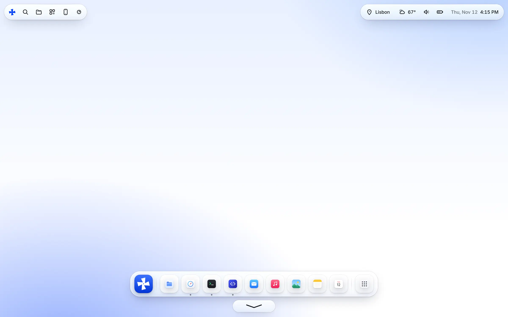
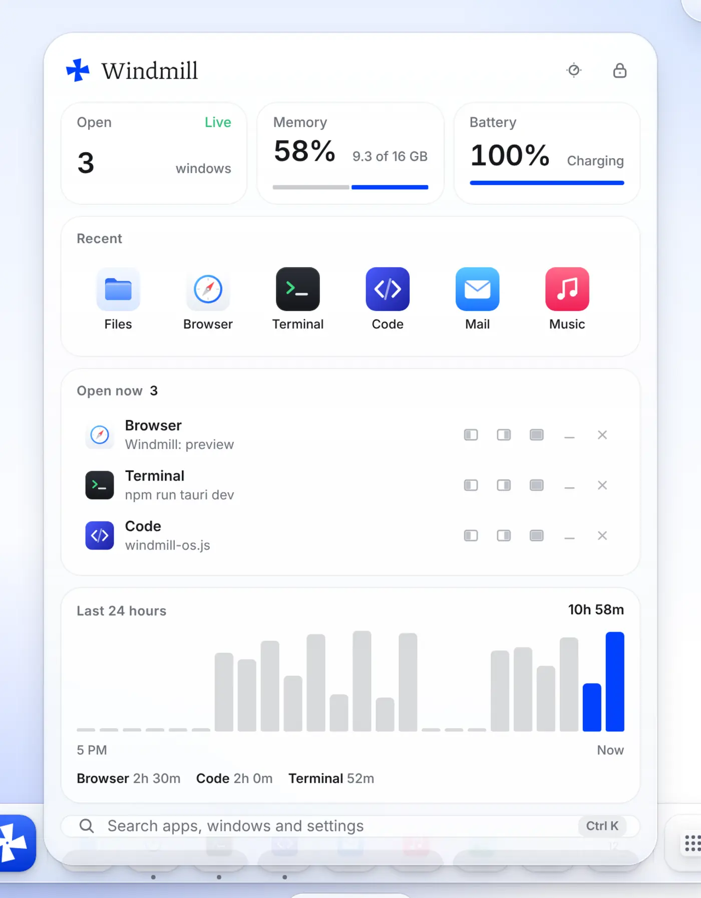
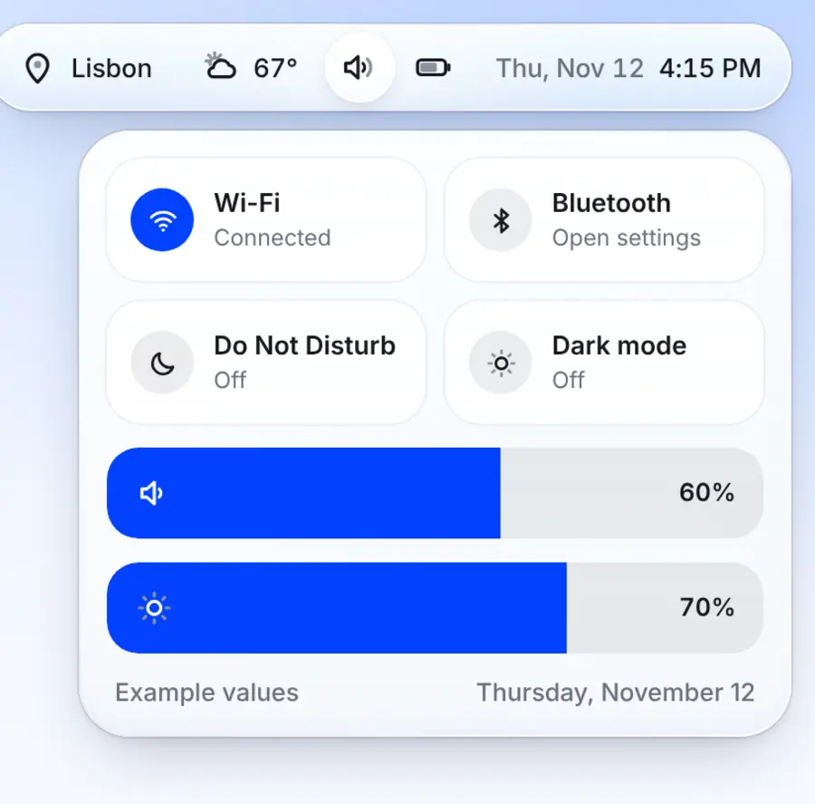
Screenshots use example data.
What it is
Everything you've installed shows up with its real icon. Keep your favorites in the dock and open the rest from All apps.
Your apps still work exactly as before. Windmill gives them a quieter home, a better dock, and one panel for everything else.
Shut down Windmill from its panel and Windows is right there, taskbar and all. Your apps get the chance to save first.
Press Ctrl and the Windows key together and the Windmill panel drops in, wherever you are.
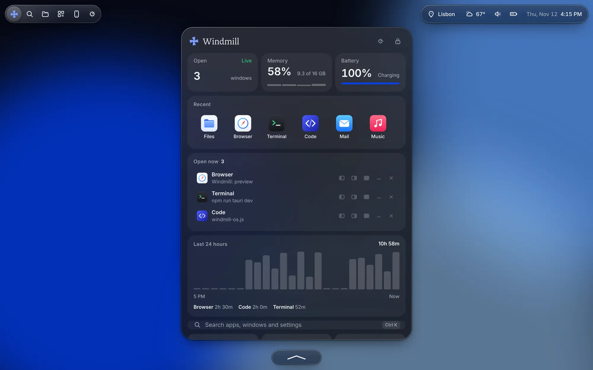
Multitasking
Hover an open app in the dock. Snap it to the left or right half, fill the screen, or put it next to another window in one tap.
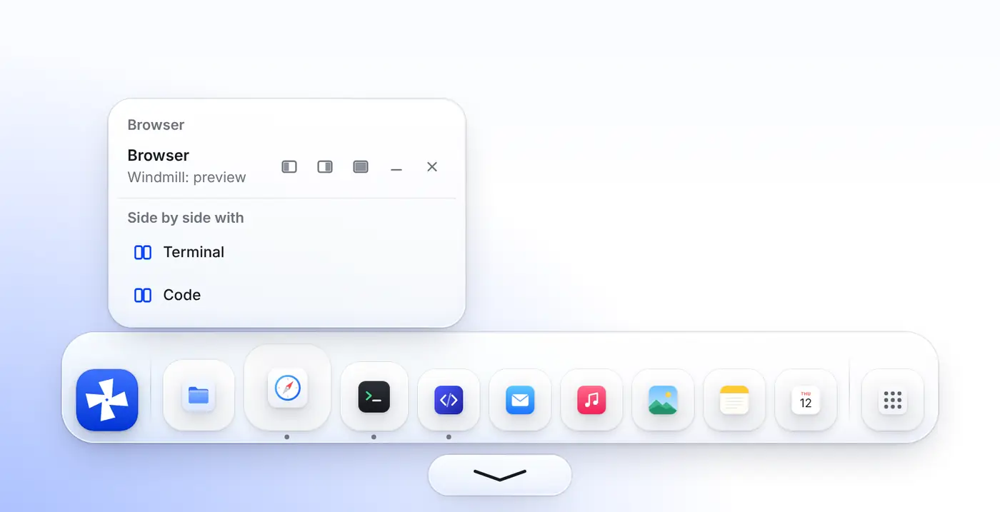
Type a few letters to open an app, jump to a window, change your wallpaper or lock your screen. Arrow keys and Enter, and you're there.
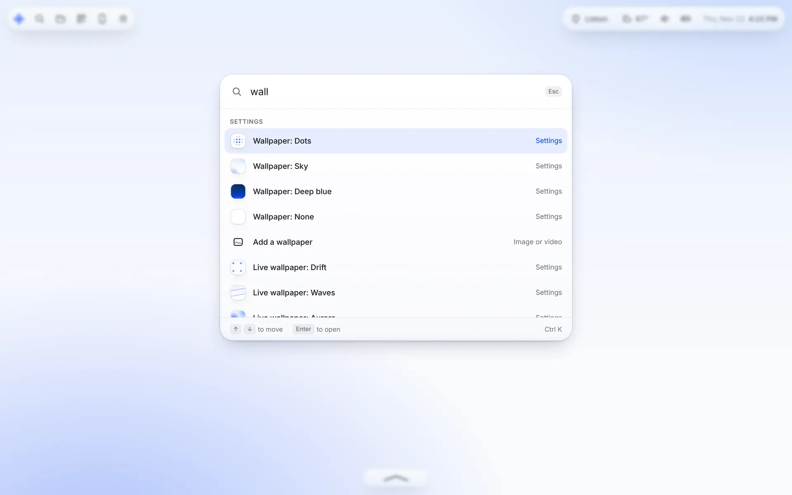
Windmill for Android
Pair your Android phone with a six-digit code and your PC's screen appears on it, live. Tap to click, hold to right-click, drag, scroll with two fingers, and type with your phone's keyboard.
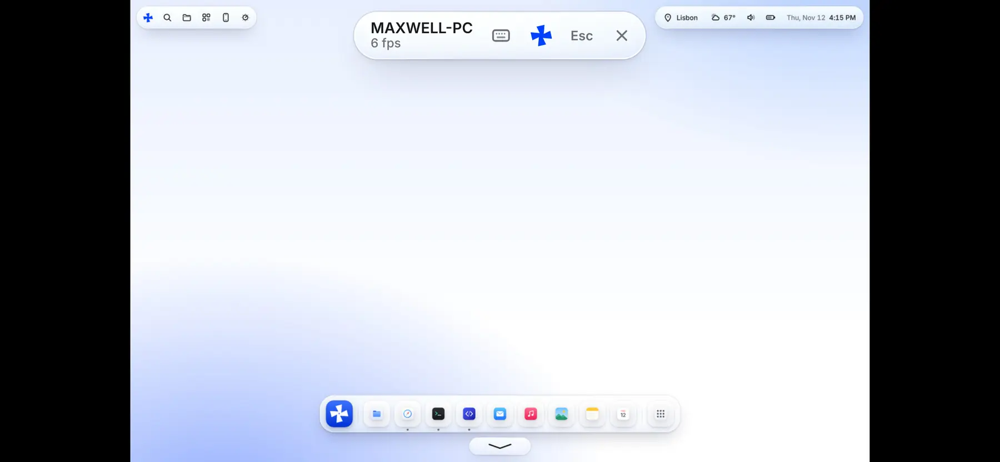
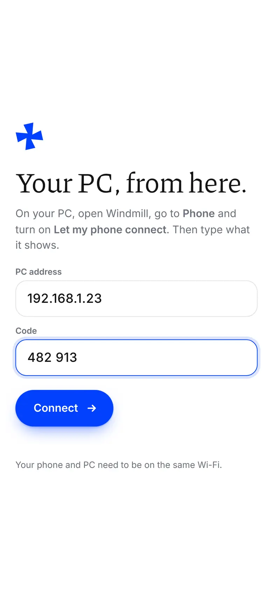
Open Windmill, go to Phone and turn on Let my phone connect. It shows an address and a code.
Open Windmill for Android and type the address and code.
Your screen shows up. Press the Windmill button to open the panel from your phone.
Make it yours
Drift, Waves and Aurora move slowly behind everything. Or use any photo or video of your own.
Blue, white or black. Windows and your phone's home screen follow along.
A big clock on your wallpaper. Add a four-digit PIN and Windmill locks itself when you step away.
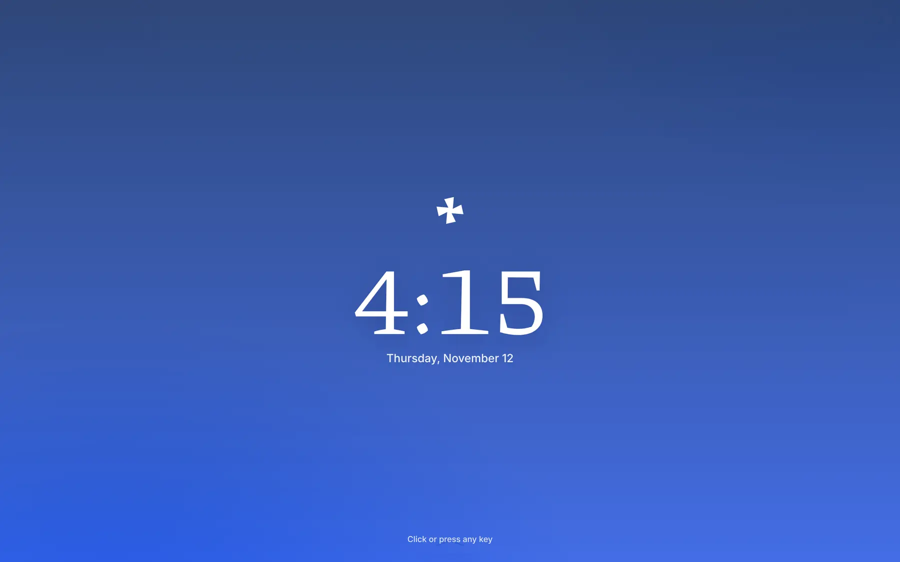
Country, language, time format, light or dark, wallpaper. Pick each one on a wheel that feels like it's in your hand.
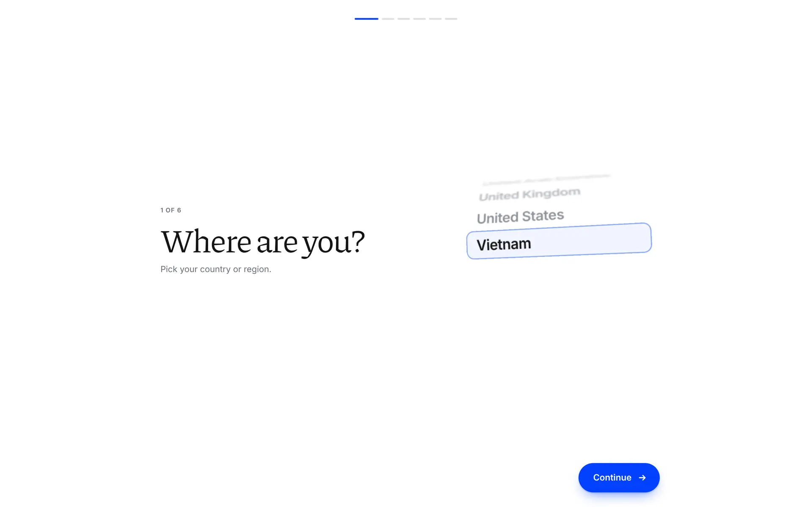
Search everything installed and keep favorites in the dock.
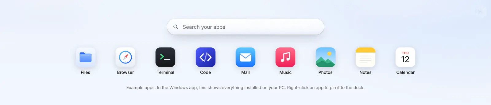
Choose the buttons in the top bar, your cursor, your icon, when to lock, whether Windmill starts with Windows, and whether it hides the Windows taskbar.
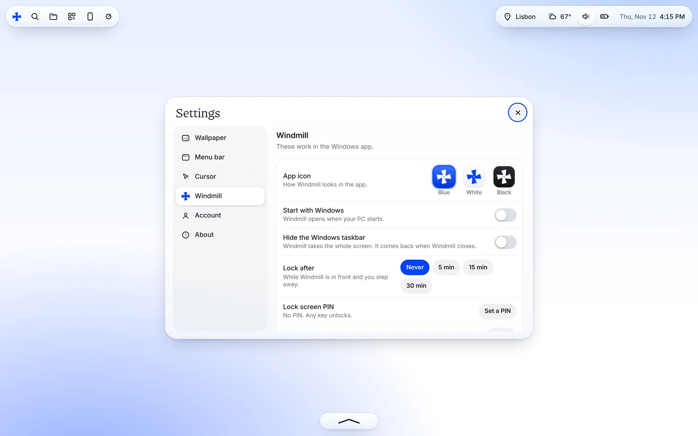
The details
How long you spent in each app is counted on your computer and never sent anywhere.
Hide the Windows taskbar while Windmill is open. Quit or restart Windmill and it comes right back.
Shutting down Windmill asks each open app to close politely, the same way Windows does.
Windmill opens when Windows starts, so your calm space is the first thing you see. Switch it off in Settings.
Frosted panels with real depth, light that follows your pointer, and presses that spring back.
Your profile in Windmill with one code, no password typed into the app.
Free to download during the preview.
For Windows 10 and 11, 64-bit. Installs just for you, no admin needed.
Download the installer The installer isn't signed yet, so Windows may warn you. Choose More info, then Run anyway.The remote for your PC. For Android 7 and newer.
Download the app Your phone will ask to allow installing from your browser the first time.This is an early preview, so expect rough edges. Every version is on the releases page, or try Windmill in your browser first.
No. Windmill is an app that runs full screen on Windows and gives your apps a calmer home. Windows is still underneath, doing what it always does.
No. Windmill shows the apps you already have, Store apps included, with their real icons. When you open one, it's the same app you've always used.
Press Ctrl and the Windows key to open the Windmill panel and choose Shut down. Windmill asks your apps to close, then quits, and the taskbar is back. You can also turn off "Start with Windows" in Settings.
It's a remote for your PC. Once paired on the same Wi-Fi, you see your PC's screen and control it with touch and your phone's keyboard.
It only works on your local network, only after you switch it on in Windmill, only with the six-digit code shown on your PC, and only for one phone at a time. You can make a new code or turn it off whenever you like.
Windows comes first. You can try the whole interface in your browser today, and other systems may follow.